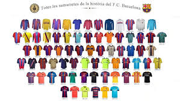

On 22 October 1899, Hans Gamper placed an advertisement in Los Deportes declaring his wish to form a football club; a positive response resulted in a meeting at the Gimnasio Solé on 29 November. Eleven players attended – Walter Wild (the first director of the club), Lluís d'Ossó, Bartomeu Terradas, Otto Kunzle, Otto Maier, Enric Ducal, Pere Cabot, Carles Pujol, Josep Llobet, John Parsons, and William Parsons – and Foot-Ball Club Barcelona was born.[16]
FC Barcelona